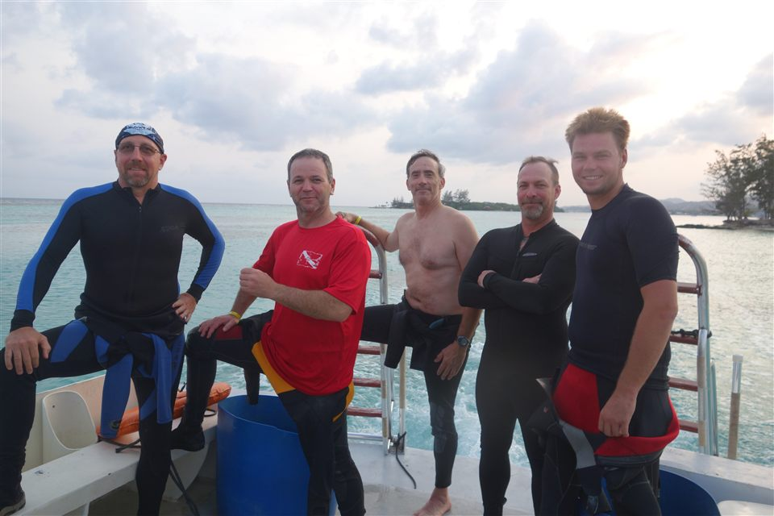
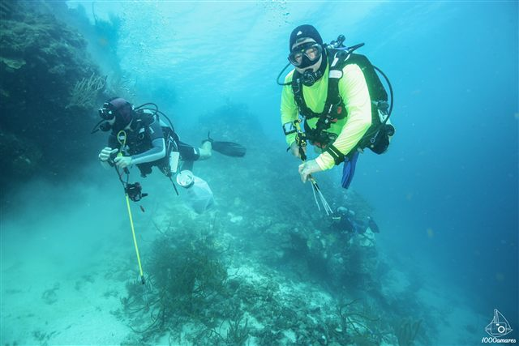
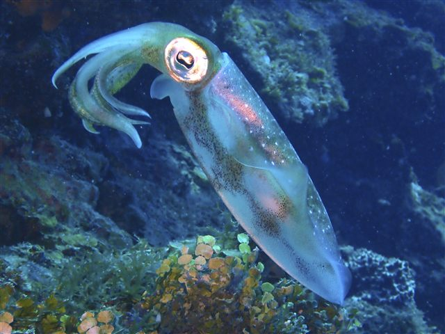

The person behind WWMSID
More than dives.
A lifetime of stories.
Scuba instruction, life around the dive shop, and the people met along the way. This is the world behind What Would My Scuba Instructor Do?
Christopher Willey’s career brought together diver training in Roatan, Honduras, marine-life education, and lionfish awareness. Explore the experiences above and below the surface.
Meet ChristopherLatest Update
The WWMSID website is being upgraded to better showcase the book, dive career stories, media features, and photo galleries.
The second book in the WWMSID series is planned for release in 2027. More details will be shared when available.

Available Now
Get Your Copy
What Would My Scuba Instructor Do? is available in ebook, audiobook, and paperback formats.
Whether you are a new diver, a dive professional, or someone curious about the scuba industry, this book shares stories and lessons from real dive-shop experience.
About the Book
A look inside dive-shop life
Ever wondered what it takes to work in a dive shop or become a scuba professional? This book blends dive stories, humor, real-world lessons, and industry insight.
It is written from the perspective of someone who has lived the scuba lifestyle, worked around students, divers, instructors, and dive operations, and experienced the strange, funny, difficult, and rewarding parts of the industry.
Dive Career
From scuba instruction to underwater conservation
Scuba Instruction
Experience teaching divers, working with students, and helping people build confidence in the water.
Dive-Shop Experience
Real-world experience in the dive industry, including customer service, equipment, training, travel, and daily dive operations.
Lionfish Work
Work connected to lionfish awareness, safe hunting practices, and invasive species education.
Writing & Media
Author of WWMSID with media features and articles connected to scuba, lionfish, and diving education.
Photo Gallery
Through the dive mask.
Explore the collectionA collection of scuba, travel, dive-shop, and underwater photos from Christopher Willey's dive career.







Media & Articles
External Features
Facebook Page
Follow WWMSID updates and related content.
DiveWire Lionfish
Article about lionfish hunter specialty training.
The Reminder
Feature on invasive species work and dive career.
Deeper Blue
Coverage of the lionfish hunter distinctive specialty.
DiveWire Fish ID
Article about advanced fish identification specialty training.
Paya Magazine
Lionfish article feature.
Interested in scuba, dive stories, or the WWMSID book?
Explore the book, read about Christopher Willey's dive career, or get in touch for more information.